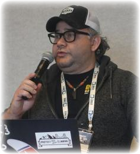

Removing the kthread freezer
The final day of the 2023 Linux Storage, Filesystem, Memory-Management and BPF Summit featured three separate sessions led by Luis Chamberlain (he also led a plenary on day two); the first of those was a filesystem session on the status of the kthread-freezer-removal effort. The kthread freezer is meant to help filesystems freeze their state in order to suspend or hibernate the system, but since at least 2015, the freezer has been targeted for removal. Things did not change much a year later, nor by LSFMM in 2018 when Chamberlain had picked up Jiri Kosina's removal effort; this year, Chamberlain was back to try to push things along.
It may come as a surprise to some that freezing filesystems in preparation for suspending the system has been broken in Linux for years, he began. There is no unified mechanism to freeze filesystems and if there is a lot of I/O going on, it can lead to a system hang when resuming, which is not quite what users are looking for.
The problem comes about because the kthread-freezer API, which was added to help stop in-flight I/O during suspend operations, has sloppy semantics and is used somewhat haphazardly. The control group (cgroup) freezer was broken in the kernel the last time the kthread-freezer topic was discussed at LSFMM, but he wondered if that was still the case. It has been fixed, Aleksa Sarai said, which required a new cgroup filesystem, another attendee added. There were also problems with the freezing process racing with the automounter, Chamberlain said, but no one in the room seemed to know about the status of that; "I guess we'll have to keep that in mind".

There are some ordering problems that will need to be resolved, which eventually may require building a directed acyclic graph (DAG) of the filesystem superblocks so that freezing and thawing can be done in the right order. He said that Al Viro has lamented the fact that he implemented the LOOP_CHANGE_FD ioctl() command so that Fedora live installations could jump directly to the newly installed filesystem; that breaks the expected ordering when iterating through superblocks, so suspending those systems may be broken. RAID can also introduce ordering oddities. The assumption is that the ordering is consistent when iterating forward and backward over the superblocks; it likely holds for most users on laptops and mobile devices, who are the ones that predominantly do suspends in any case.
Chamberlain wondered if there was a need for a mechanism to notify user-space applications that a suspend was coming in order to give them some time to quiesce. Ted Ts'o said that kind of notification exists in Windows, but the applications need to be given some amount of time to actually quiesce; if that process does not complete, the suspend needs to go on without them. Implementing the notification is not hard, "that's just plumbing" using D-Bus or something similar.
Handling network block devices is another problem area that was identified eight years ago, Ts'o said; "everyone said 'yeah, that's hard' and they all backed away slowly". David Howells noted that FUSE filesystems add complexity to the problem as well, since there are both kernel and user-space pieces that have to be frozen. Amir Goldstein pointed out that the checkpoint/restore developers have already been dealing with these kinds of complexities, which might serve as a model.
Lennart Poettering said that there is already a bunch of infrastructure in systemd for doing the user-space notification. If applications are interested in getting the notification, they can get it from systemd, which will give them a few seconds to react if needed. He noted that the suspend-then-hibernate sequence, which hibernates the system after a period of time in suspend mode, currently wakes up all of user space for a brief time before the hibernate, which is "just stupid". So there is work underway to leave all of user space frozen, using the cgroup freezer, except for the small piece that oversees the switch to hibernating. Jan Kara said that the kernel will still have to unfreeze the filesystems so that the overseer process can check the battery status and the like.
Chamberlain said that it sounded like the user-space side of the problem was largely solved at this point. He wanted to talk about what's next after the kthread-freezer calls get removed from the filesystems. That removal is done using Coccinelle semantic patches. His most recent patch is for the core of the automatic kernel freeze and resume code that will replace the kthread freezer API; the previous RFC patch set from January has the removal for more than a dozen filesystems using the Coccinelle rules.
He wondered if it makes sense to go ahead and remove the use of the API in other parts of the kernel. The API was added to allow filesystems to stop I/O in flight, he said, so it is probably being used incorrectly elsewhere. Jeff Layton said that the API is being used in NFS, and he is not convinced that is being done correctly, so he would like help removing the kthread freezer from there. Sarai said that cgroup v1 still uses the kthread freezer and he does not know why it was not changed to match cgroup v2; there will need to be a discussion about that before the API can be completely removed. Howells noted that all of the network filesystems will have some of the same problems that Layton is concerned about. Chamberlain wrapped things up by saying that the removal can be done incrementally, working through filesystems and subsystems one by one.
Note that the video for this
session is mislabeled
with the name of the Chamberlain-led iomap-conversion-status session, which
took place right after. As might be guessed, the video for that
session is titled "Removal of kthread freezer next steps".
| Index entries for this article | |
|---|---|
| Kernel | Kernel threads |
| Conference | Storage, Filesystem, Memory-Management and BPF Summit/2023 |